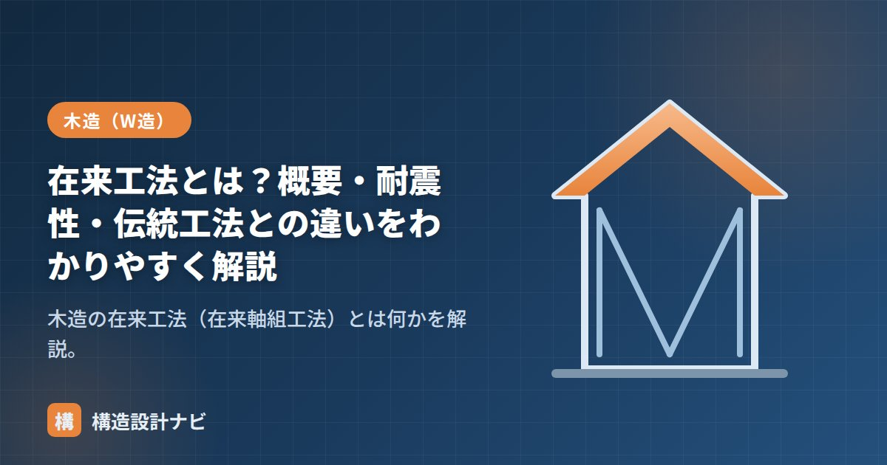

在来工法とは？概要・耐震性・伝統工法との違いをわかりやすく解説

「在来工法」は、日本の戸建て木造住宅で最も多く使われている工法です。正式には木造軸組工法（在来軸組工法）と呼びます。この記事では、在来工法の概要・耐震性、そして混同されやすい「伝統工法（伝統構法）」との違いを整理します。
在来工法の概要
在来工法は、柱と梁（横架材）で骨組み（軸組）をつくり、筋かいや構造用面材で水平力に抵抗する工法です。基礎の上に土台を据え、柱を立て、梁・桁で連結し、屋根を架けます。間取りの自由度が高く、増改築や開口部の設置がしやすいのが特徴です。
- 鉛直の荷重（建物の重さ）：柱・梁が支える。
- 水平の力（地震・風）：筋かいや耐力壁が抵抗する。
- 柱脚・柱頭などの接合は接合金物で緊結する。
在来工法の耐震性
在来工法は、過去の地震被害を教訓に、法改正を経て耐震性が大きく向上してきました。
| 年 | 主な強化 |
|---|---|
| 1981年（新耐震基準） | 必要壁量の見直し。震度6強〜7でも倒壊しない水準へ。 |
| 2000年（4号特例下の基準強化） | 地盤に応じた基礎、柱の接合金物（N値計算）、耐力壁のバランス（四分割法）を明確化。 |
現在の在来工法の耐震性は、「壁の量・配置バランス・接合」の3点を適切に満たすことで確保されます。詳しくは「壁倍率と必要壁量」「四分割法」で解説します。
伝統工法（伝統構法）との違い
在来工法とよく混同されるのが「伝統工法」です。どちらも木の軸組ですが、力への抵抗の考え方が根本的に異なります。
| 項目 | 在来工法 | 伝統工法（伝統構法） |
|---|---|---|
| 接合 | 接合金物で緊結 | 仕口・継手（木組み）。金物を使わない |
| 水平力への抵抗 | 筋かい・耐力壁で「固めて」抵抗 | 柱の傾き・貫などで「変形して粘り」吸収 |
| 基礎 | コンクリート基礎に緊結 | 石場建て（礎石の上に柱を置く）など |
| 例 | 一般的な木造住宅 | 寺社建築、古民家 |
在来工法は「剛（かたく固めて耐える）」、伝統工法は「柔（しなやかに変形して受け流す）」という考え方の違いがあります。現代の住宅のほとんどは、計算・施工がしやすく耐震性を確保しやすい在来工法です。
古民家の耐震診断を頼まれると悩ましいのが、在来工法の壁量計算の考え方をそのまま伝統工法の建物に当てはめられない点だ。石場建てで柔らかく変形する建物に「壁を固める」発想の補強を持ち込むと、かえって力の流れを乱すことがある。
在来工法の力の流れ（図解）
在来工法の骨組みは、役割の違う部材が積み重なってできています。どの部材がどの力を受け持つのかを押さえると、構造の全体像がつかめます。
接合金物の役割
2000年の基準強化で明確になったのが接合部の金物です。壁をいくら強くしても、柱が土台から引き抜けてしまえば意味がありません。代表的な金物と役割を整理します。
| 金物 | 取り付け位置 | 役割 |
|---|---|---|
| ホールダウン金物 | 柱脚・柱頭（引き抜き力が大きい柱） | 地震時に柱が浮き上がろうとする力を、基礎や上下階に直接伝えて抑える |
| 羽子板ボルト | 梁と柱の仕口 | 横架材が柱から抜け出すのを防ぐ |
| 筋かいプレート | 筋かいの端部 | 筋かいが柱・土台から外れるのを防ぐ。端部が外れると筋かいは働かない |
| アンカーボルト | 土台と基礎 | 建物が基礎からずれる・浮き上がるのを防ぐ |
どの柱にどの金物が必要かは、柱に生じる引き抜き力から決めます。簡易な方法がN値計算で、柱の両側の壁倍率の差などから必要な金物の種類を選定します。壁倍率の高い耐力壁の端部ほど、大きな引き抜き力が生じるため強い金物が必要になります。
よくある質問
Q1. 在来工法と2×4（枠組壁工法）はどちらが地震に強いですか？
どちらが一方的に強いということはなく、基準どおりに設計・施工されていれば、いずれも必要な耐震性能を確保できます。2×4は壁・床の面で抵抗するため耐力のばらつきが小さく安定していますが、開口部の設置や間取り変更の自由度は在来工法のほうが高くなります。在来工法でも構造用合板を張った面材耐力壁を使えば、2×4に近い考え方で剛性を高められます。
Q2. 在来工法で増改築しやすいのはなぜですか？
柱と梁で骨組みをつくる構造のため、壁の位置を比較的自由に変更できるからです。ただし「どの壁でも動かせる」わけではありません。耐力壁として計算に入っている壁を撤去すると、壁量や配置バランスが不足して耐震性が低下します。リフォームの際は、構造図で耐力壁の位置を確認し、撤去する場合は別の位置に補う設計が必要です。
Q3. 2000年基準以前の在来工法住宅は補強が必要ですか？
一律に必要とは言えませんが、耐震診断を受けることをおすすめします。2000年以前は接合金物の規定や耐力壁のバランス確認（四分割法）が明確でなかったため、壁量は足りていても金物が不足していたり、壁の配置が偏っていたりする例があります。診断で弱点が判明した場合は、耐力壁の追加や金物の後付けで補強できます。
まとめ
- 在来工法＝木造軸組工法。柱・梁の軸組と筋かい・耐力壁で支える日本の主流工法。
- 耐震性は1981年・2000年の基準強化で向上。壁の量・配置・接合が鍵。
- 伝統工法は金物を使わず木組みで「変形して粘る」点が在来工法と異なる。